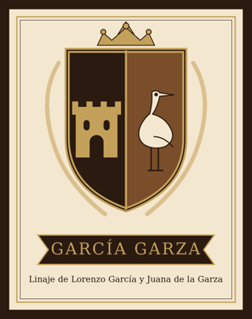

Dr. Jesús García Fuentes
| Dr. Jesús García Fuentes | |
|---|---|
 Escudo de armas (García Garza) | |
| Descripción | Médico y director del Ateneo Fuente (1901-1902) |
| Fechas / lugar | 1851–1907 (según libro) |
| Línea familiar | García Garza |
Dr. Jesús García Fuentes (1851–1907 (según libro)) — [Según Durón Jiménez, 1992; sin documento verificado] Médico saltillense, alumno del Ateneo Fuente y titulado en la Escuela Nacional de Medicina de México; el libro lo da como director del Ateneo de 1901 a 1902. Casó con María Ramos y tuvo a Fernando y Conchita. Murió el 9 de septiembre de 1907.
Contenido
- 1 Vida y cronología (según las fuentes citadas; sin documento verificado)
- 2 Familia (según el libro; sin documento verificado)
- 3 Parentescos según el libro (sin documento verificado), con las fichas de esta galería y del archivo
- 4 Cargos, oficios y obra
- 5 Lo que dice el libro (sin documento verificado)
- 6 Investigación complementaria
- 7 Contradicciones del libro
- 8 Dato en investigación
- 9 Fuentes
- 10 Referencias
Aviso de método. Esta página reúne lo que dice el libro de Martha Durón Jiménez, Orígenes de una fundación (Archivo Municipal de Saltillo, 1992), y otras fuentes secundarias. Nada de ello se da por establecido: las filiaciones, apellidos y fechas se presentan como «según Durón Jiménez, p. X; sin documento verificado». Sólo se tendrá por probado lo que respalde una imagen de documento (acta, protocolo, registro) leída y transcrita; cuando se incorpore, se indicará aquí.
Según Durón Jiménez, Orígenes de una fundación (1992); sin documento verificado: Médico saltillense, alumno del Ateneo Fuente y titulado en la Escuela Nacional de Medicina de México; el libro lo da como director del Ateneo de 1901 a 1902. Casó con María Ramos y tuvo a Fernando y Conchita. Murió el 9 de septiembre de 1907.
Biografía elaborada a partir del libro de Martha Durón Jiménez, Orígenes de una fundación. Genealogía de don José García Rodríguez, 1530-1992 (Archivo Municipal de Saltillo, 1992), cuyo texto se cita en extracto con su página, y de investigación complementaria con fuentes citadas. Lo que no tiene fuente se marca «dato en investigación»; las contradicciones se señalan sin corregirlas.
El libro no reproduce un retrato de esta persona; se muestra el escudo de la sala. ¿Conoce una fotografía de época? Puede compartirla para completar la galería.
- Años (según el libro y fuentes citadas; sin documento verificado): 25-dic-1851 – 9-sep-1907
- En el libro: p. 26 (texto); árbol p. 27
Vida y cronología (según las fuentes citadas; sin documento verificado)[editar]
- 25-dic-1851 Nace en Saltillo, hijo de Dionisio García Carrillo y María Luisa Fuentes. (libro p. 26; árbol p. 27 (lectura visual del libro).)
- 1870s Ingresa al Ateneo Fuente y se traslada a la Ciudad de México a la Escuela Nacional de Medicina. (libro p. 26.)
- 1878 Presenta su tesis inaugural Signos para distinguir las lesiones hechas durante la vida, de las que son hechas después de la muerte (Escuela Nacional de Medicina; imprenta de José Vicente Villada, 20 p.). (Registro ADABI.)
- 1901-1902 Dirección del Ateneo Fuente («un período, de 1901 a 1902»). (libro p. 26. No confirmado en fuentes abiertas.)
- 9-sep-1907 Fallece. (libro p. 26; árbol p. 27.)
Familia (según el libro; sin documento verificado)[editar]
Padres: Dionisio García Carrillo y María Luisa Fuentes. Hermano: Dr. Dionisio García Fuentes. Primo hermano: José García Rodríguez (Rev. 116, p. 57).
Esposa: María Ramos. Hijos (libro): Fernando y Conchita. Árbol p. 27: Fernando García Ramos (↔ Guadalupe García; con él Fernando García García) y Concepción García Ramos.
Parentescos según el libro (sin documento verificado), con las fichas de esta galería y del archivo[editar]
- Padre: Dionisio García Carrillo
- Hermano: Dr. Dionisio García Fuentes
- Primo hermano: Don José García Rodríguez
Cargos, oficios y obra[editar]
Médico (Escuela Nacional de Medicina, tesis 1878). El libro lo da como director del Ateneo Fuente en 1901-1902; ni Dávila ni la Rev. 116 consultadas lo mencionan como tal, y una búsqueda el 28-oct-2026 tampoco lo confirmó (resultado: sólo «alumno temprano del Ateneo»): dato en investigación.
Lo que dice el libro (sin documento verificado)[editar]
Extracto fiel de Durón Jiménez, Orígenes de una fundación, 1992, p. 26 (texto); árbol p. 27. Se conserva la ortografía original; [sic] señala un error del original y [n] una llamada de nota.
JESÚS GARCÍA FUENTES:
Nació el 25 de diciembre de 1851 en Saltillo; realiza sus primeros estudios en la ciudad, ingresa al Ateneo Fuente y posteriormente se traslada a la ciudad de México para realizar sus estudios en la Escuela Nacional de Medicina. Ocupa la dirección del Ateneo Fuente un período, de 1901 a 1902. El doctor García Fuentes contrae matrimonio con doña María Ramos, y procrean a Fernando y Conchita. El doctor fallece el 9 de septiembre de 1907.
Investigación complementaria[editar]
- Tesis: registro ADABI (https://www.adabi.org.mx/vufind/Record/1117749), 1878.
- Parentesco: Durón Jiménez, Rev. Coah. Hist. 116, p. 57: «los doctores Dionisio y Jesús García Fuentes eran sobrinos carnales del licenciado García Carrillo, hijos de su hermano mayor Dionisio García Carrillo».
- No se halló semblanza independiente; no se añaden datos sin fuente.
Contradicciones del libro[editar]
Se registran sin corregir.
- Dirección del Ateneo 1901-1902. Aparece sólo en el libro (p. 26). Dávila (p. 36) ofrece para el Ateneo una lista de directores en la que no se identificó su nombre en esos años; no se corrige, se marca como dato en investigación.
Dato en investigación[editar]
- Acta de nacimiento y defunción; fecha de su matrimonio con María Ramos; datos de la dirección 1901-1902 (nombramientos en el AMS o Periódico Oficial): dato en investigación.
Fuentes[editar]
- Martha Durón Jiménez, Orígenes de una fundación. Genealogía de don José García Rodríguez 1530-1992, Archivo Municipal de Saltillo, 1.ª ed., diciembre de 1992, 146 pp..
- Martha Durón Jiménez, «Ateneo Fuente: un proyecto de familia 1867-1948», Revista Coahuilense de Historia n.º 116, pp. 37-58 (mismo PDF que la anterior).
- Jesús García Fuentes, Signos para distinguir las lesiones hechas durante la vida, de las que son hechas después de la muerte (tesis inaugural, Escuela Nacional de Medicina), México, imprenta de José Vicente Villada, 1878, 20 p. Registro ADABI: https://www.adabi.org.mx/vufind/Record/1117749
- Esperanza Dávila Sota, Ateneo Fuente. La expresión de un edificio, Instituto Municipal de Cultura de Saltillo, 2021 (col. Edificios emblemáticos de Saltillo), pp. 36-37 (Paraninfo «Dr. Dionisio García Fuentes») y 41-42 (Biblioteca «José García Rodríguez»). PDF: https://web.seducoahuila.gob.mx/colegiocoahuilense/assets/img/publicaciones/publicacionescontenido/Ateneo%20Fuente-Esperanza%20Davila.pdf.
Referencias[editar]
- «Dr. Jesús García Fuentes», Genealogía Sefardí — investigación Sefarad-MX, genealogiasefardi.site/biografias/jesus-garcia-fuentes.